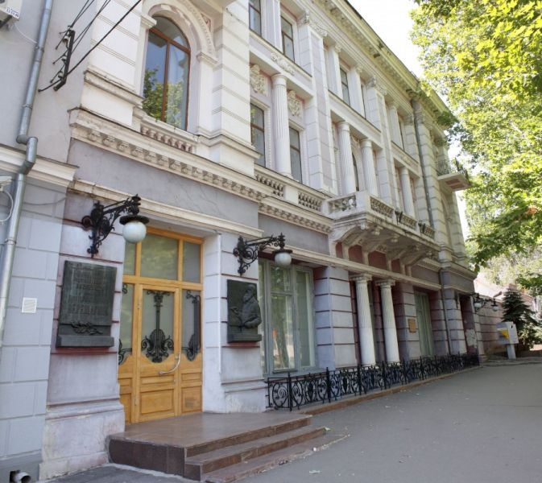

Самые интересные музеи
Музей судостроения и флота
Более 30 лет назад, 30 июля 1978 года, в День военно-морского флота в городе Николаеве был создан уникальный музей, аналогов которому в Украине больше нет – Музей судостроения и флота. Город выбран не случайно, ведь именно Николаев с 1794 года был базой Черноморского флота. Здание музея – бывший штаб флота. Некоторое время оно служило резиденцией главнокомандующего. Строительство было окончено в 1794 году. Здание является прекрасным образцом русской классической архитектуры. Уникальная экспозиция музея насчитывает более 3000 экспонатов, расположенных в 12 тематических залах, и демонстрирует историю судостроения Украины, начиная со времен Киевской Руси и заканчивая современностью. Коллекция кораблей 18–19 веков, навигационные приборы, карты, документы являются жемчужинами коллекции. Все эти предметы – свидетели героических сражений и побед моряков. Музей судостроения и флота – уникальный историко-культурный объект Николаева. Каждый турист, как взрослый, так и ребенок, сможет почувствовать себя настоящим моряком и многое узнать об этой романтичной профессии.
Николаевский областной краеведческий музей
Николаевский краеведческий музей является не просто региональным музеем, а местом с богатой историей. В 1792 году была отправлена первая экспедиция матросов в Ольвию. Ее целью стали поиски старины. Проходили они достаточно успешно, уже к началу 19 века количество ценностей стало настолько большим, что возник вопрос об открытии музея для их хранения. По указу главного командира Черноморских портов маркиза де Траверсе в городе был создан кабинет редкостей, который в 1803 году переоборудовали под музей. Краеведческий музей в Николаеве входит в число самых первых музеев древности в Российской империи. В 1806 году он был единственным музеем Новороссии, в который свозились все археологические находки. В 1838 году был выстроен специальный павильон для экспозиций. Именно коллекция Николаевского краеведческого музея легла в основу для открытия местных музеев в таких городах, как Керчь, Одесса и Херсон. Коллекция сильно пострадала во время Крымской войны 1856 года, Октябрьской революции и Великой Отечественной войны. В это время экспозиция постоянно переезжала из здания в здание, в результате чего много артефактов было безвозвратно утеряно. В 1950 году у Николаевского музея начинается новая жизнь. Коллекция пополняется новыми экспонатами. Обновленный музей открывает свои двери для посетителей. С 2012 года он размещается в здании-памятнике национального значения «Старофлотские казармы». В экспозиции музея находятся более 160 тыс. экспонатов, все они поделены на тематические выставки. В основном это предметы античности из Ольвии, инструменты Киевской Руси, оружие казаков и множество других ценных объектов.
Николаевский художественный музей имени В. В. Верещагина
Николаев – это город богатый на достопримечательности, в частности на большое количество музеев. По мнению многих туристов настоящей жемчужиной среди них является Николаевский областной художественный музей им. В. Верещагина. Для местных обывателей он является городским центром культуры и эстетики. Музей был основан еще во времена царской России в 1914 года, и носит гордое имя известного русского художника-баталиста. Музей обладает богатой коллекцией, которая насчитывает около 10 тысяч экспонатов. Специалисты называют эту коллекцию «художественной летописью Украины». В залах музея вы сможете рассмотреть произведения отечественного искусства, включая такие жанры как живопись, скульптуру, декоративно-прикладное искусство, графику. Настоящие ценители живописи могут насладиться восхитительными шедеврами К. Брюллова, В. Серова и самого В. Верещагина. Как ни странно, но в начале музей размещался в здании гауптвахты военного ведомства. Однако, в 90-х все стало на свои места и ему выделили отдельное здание, которое является памятником архитектуры.
Музей подпольно-партизанского движения
Музей «Подпольно-партизанское движение на Николаевщине в годы Великой Отечественной войны. 1941–1944 гг.» основан в 1975 году в доме, где во время Великой Отечественной войны проживал Герой Советского Союза Виктор Лягин. Несмотря на то, что в музее имеется только один зал, он предлагает вашему вниманию занимательную экспозицию, которая раскрывает основные этапы войны на Николаевщине. Особое внимание мужчин обычно привлекает уникальная коллекция советского и немецкого стрелкового оружия того периода, а также видеотека советской и немецкой военной хроники. Только здесь вы сможете увидеть выставочные проекты политической истории страны 30-50-х годов, которые долго скрывались в секретных архивных фондах. Фиктивные пропуски, медицинские справки, копии немецких печатей, паспорта – все эти старинные предметы помогают вам окунуться в атмосферу нашего прошлого. Работники музея специализируются на тематических экскурсиях, также они проводят музейные вечера с видеопоказами, устраивают встречи с ветеранами. Можно с точностью сказать, что в данном музее вам скучать не придется. Если вы по-настоящему интересуетесь историей, а также любите посещать памятники архитектуры, отличным вариантом для вашего посещения станет музей подпольно-партизанского движения.